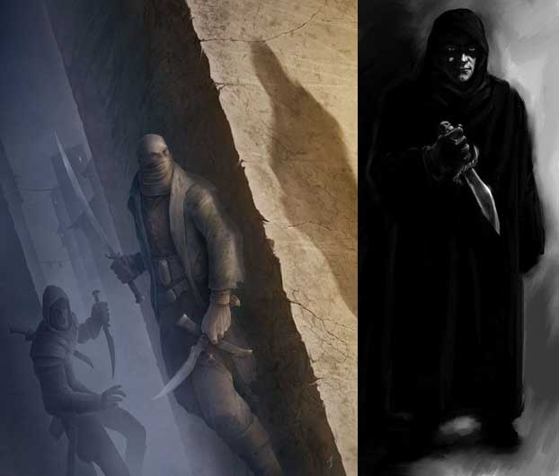

Il lethal attack è una particolare manovra di combattimento utilizzata dai personaggi della classe dei ladri. Il personaggio, in particolare, nel corso di un combattimento prova a colpire il proprio nemico in un punto vitale con un attacco furtivo ed improvviso.
Sferrare un colpo letale
Questo colpo letale può essere sferrato unicamente contro creature di taglia compresa tra Small e Large, che siano dotate di un corpo organico e le cui parti vitali siano riconoscibili ed accessibili. Per tale motivo, questo colpo non può essere effettuato contro melmoidi, non morti, costruiti, piantiformi e creature similari.
Per poter effettuare questo attacco, inoltre, il ladro dovrà utilizzare un'arma da corpo a corpo, che sia da taglio o da punta, di taglia small o medium ed avere necessariamente l'altra mano libera.
Questa particolare manovra di combattimento deve essere dichiarata nella fase di dichiarazione delle iniziative ed è incompatibile con qualsiasi colpo speciale di combattimento o altra manovra di combattimento (si pensi ad esempio alla manovra di carica).
Al momento in cui effettua l'attacco il
ladro dovrà effettuare una prova in entrambe le abilità
Hide in Shadow e Move Silently. Ad ogni
prova saranno applicati i seguenti modificatori:
- 5% per ogni dado vita/livello superiore della
vittima dell'attacco letale rispetto al ladro.
- 5% se il ladro utilizza un'arma di dimensioni
medium.
+ 5% se il ladro utilizza un'arma di dimensioni
small.
+ 10% se il ladro attacca la vittima
avvicinandosi furtivamente alle sue spalle.
Se una od entrambe le prove falliscono il ladro effettuerà un normale attacco contro l'avversario e la manovra speciale non si considererà utilizzata.
Se entrambe le prove riescono il ladro effettuerà un attacco letale contro l'avversario e la manovra speciale si considererà utilizzata. Qualora l'attacco letale vada a segno lo stesso causerà profonde ferite alla vittima producendo un danno supplementare variabile come indicato nella seguente tabella.
Trattandosi di un attacco particolarmente complesso che richiede grande tempismo, concentrazione e dispendio di energie pisco-fisiche, una volta utilizzata questa manovra speciale di combattimento, indipendentemente dal risultato dell'attacco, il ladro non potrà riutilizzarla nei nove successivi round di combattimento.
Avvicinarsi furtivamente alle
spalle
Si tratta di una tecnica utilizzata dai ladri per raggiungere alle spalle il
proprio nemico senza che questi si
sia accorto della loro presenza. Questa tecnica di avvicinamento è utilizzata
principalmente dai ladri, ma in linea di principio,
qualsiasi personaggio in grado di non farsi vedere e muoversi in silenzio (si
pensi ad un ranger oppure ad un personaggio che usi magie come silenzio ed
invisibilità) può utilizzarla per attaccare alle spalle il proprio nemico. Per
essere efficace questa manovra richiede che il nemico non sia consapevole della
presenza del personaggio (per questo motivo, solitamente, il ladro si nasconde
utilizzando l'abilità hide in shadow prima del suo arrivo) e che il personaggio
si muova furtivamente e silenziosamente raggiungendo le spalle della vittima. In
particolari occasioni, un nemico potrebbe entrare da solo nel raggio del melee
con un personaggio nascosto senza che questo debba avvicinarsi. Solo in questo
caso il personaggio potrà attaccarlo alle spalle senza doversi,
precedentemente, muovere in silenzio.
Solitamente il personaggio dovrà, quindi, avvicinarsi al nemico effettuando con successo una prova di move silently giungendo alle sue spalle entro metà del suo movimento (per poter anche sferrare un attacco nello stesso round), nulla vieta però che il personaggio impieghi più tempo per raggiungere il proprio nemico (anche diversi rounds). Resta essenziale, in ogni caso, che il nemico non si renda conto della presenza del personaggio.
Nonostante il nemico non senta il suo avvicinarsi, costui potrebbe, infatti, girarsi accidentalmente nella direzione di arrivo del personaggio e scorgerlo (a meno che non sia invisibile). Per simulare questa possibilità, alla fine di ogni round, tutti coloro si trovano nel raggio visivo del ladro che si muove silenziosamente tirano un 1d6, se otterranno un risultato pari a 6 avranno scorto il personaggio avvicinarsi. In una situazione di combattimento costoro riceveranno un bonus di +2 a tale tiro. Inoltre, chi possiede la competenza "alertness" e riesce in una prova nella stessa riceve un ulteriore bonus di +1 a tale tiro (una diversa prova è richiesta ogni round di avvicinamento). Una volta che il personaggio è stato visto non gli sarà più possibile avvicinarsi furtivamente alle spalle del nemico. Si tenga presente che qualora un personaggio originariamente "visibile" raggiunga in silenzio un nemico entrando in melee con costui, alla fine del round in corso, questi si renderà automaticamente conto della presenza del personaggio.
Se la prova di muoversi in silenzio fallisce, invece, il personaggio sarà tradito dal rumore del suo movimento ed il nemico si renderà conto della sua presenza potendo evitare il suo approssimarsi alle spalle.
In ogni caso se il personaggio riesce ad avvicinarsi furtivamente alla vittima e ad attaccarla costei non potrà reagire contro il personaggio nel medesimo round considerandosi automaticamente sorpresa.